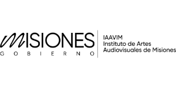
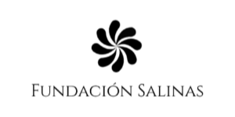
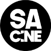
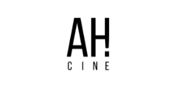
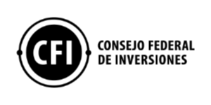
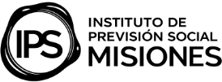
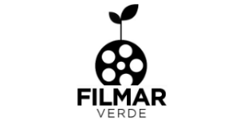
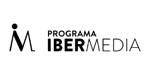

IV RESIDENCIA DEL LAGO
RDL LAB es un laboratorio cinematográfico que acompaña el desarrollo creativo de proyectos audiovisuales en etapa de tratamiento argumental para duplas creativas de Iberoamérica. En esta edición, cuenta con el apoyo del Programa Ibermedia.
La cuarta edición de RDL LAB se desarrollará de forma virtual del 12 al 30 de octubre y de manera presencial del 10 al 15 de noviembre en Misiones (Argentina).
SOBRE RDL
Residencia del Lago (RDL LAB) es un laboratorio anual de intercambio, formación y escritura creativa en la magnética naturaleza de la selva paranaense. Creada en 2023, por el guionista, director y productor Sergio Acosta, de SA CINE, con el objetivo de acompañar el germen narrativo de historias de la región.
Desde el primer momento, siempre pensamos en el cruce entre escritura y sustentabilidad, donde el contexto natural, alejado del ruido cotidiano de nuestras ciudades no estorba y da lugar al ocio, a la contemplación, al dolce far niente de la creación, donde conectar con la tierra, el agua y el fuego se hace indispensable para pensar nuestras historias y pensarnos como humanos y cineastas.
El primer año de RDL LAB convocó a realizadores de la región Entre Fronteras y el NEA Argentino. Los años siguientes logramos ampliar a toda la Argentina con un cupo federal, y a Uruguay. Sumando alianzas e intercambios de guionistas con otros laboratorios de Sudamérica como FRAPA, BoliviaLab y Produire at Sud. En esta edición, damos un paso más en nuestro crecimiento convocando a creadores de toda Iberoamérica, gracias al apoyo del Programa Ibermedia. RDL LAB es organizado por cuarto año por el Instituto de Artes Audiovisuales de Misiones (IAAviM), la Fundación Julio Salinas y las productoras SA CINE y AH! CINE.
RDL LAB propone tutorías, charlas magistrales y actividades en la naturaleza, fomenta las buenas prácticas ambientales en el diseño de los proyectos y ofrece una experiencia de intercambio, escritura y reflexión con la guía de experimentados tutores internacionales y la participación de todos los residentes.
RDL LAB se proyecta al futuro con la creación e implementación de Alumni. Una red de residentes y participantes de todas las ediciones amalgamados en un comunidad de intercambio de información, saberes y oportunidades.
ALUMNI
Es una comunidad virtual de residentes, tutores, alianzas y participantes de todas las ediciones de RDL LAB. Para ser parte de Alumni es necesario haber participado de alguna de las ediciones en algunos de esos roles.
Siendo parte de Alumni podrás, entre otras cosas: participar de un grupo activo, recibir mails informativos, colaborar con las nuevas convocatorias, ofrecer información actualizada de tu proyecto y ser parte de un catálogo de tutores, cineastas y proyectos para poner en valor su participación en RDL LAB.
El objetivo es crear una red de vinculaciones iberoamericana para compartir novedades, información útil y puedas acceder a nuevas oportunidades formativas que se impulsen, como participar sin costo de masterclasses, charlas, talleres u otros eventos que se desarrollen.
Integrar la red Alumni de Residencia del Lago es ser parte de una comunidad que se contienen mutuamente, para sostener tu proyecto y darte fuerzas en el camino de hacer tu película, favoreciendo la trazabilidad de todos los proyectos, y conocer su estado de desarrollo, producción o finalización.
DIÁLOGOS
RDL DIÁLOGOS es un nuevo proyecto formativo que nace de RDL LAB para atender un desafío constante de guionistas y escritores audiovisuales: la escritura de diálogos.
Se trata de un taller virtual de escritura de diálogos cinematográficos brindado por guionistas y consultores de guión especialistas en la materia. Dirigido a guionistas que tengan una primera o segunda obra en desarrollo y a la comunidad de Alumni RDL.
El taller estará estructurado en 12 encuentros de dos horas cada uno, con especialistas en diálogos. Allí se entablará una conversación sobre: la naturaleza de los diálogos, las técnicas para su escritura, su relación con la creación de personajes, su dosificación como revelador de información y su relación con el clímax y el final. Además, se dará lectura a ejemplos de escenas de películas y se trabajará con escenas dialogadas por los participantes para su lectura, análisis, reescritura y relectura.
Un taller apasionante para guionistas que quieren perfeccionar el arte de hacer hablar a sus personajes, pero no de más ni de menos, sino, lo justo que requiere su historia y su personaje.
EDICIONES ANTERIORES







